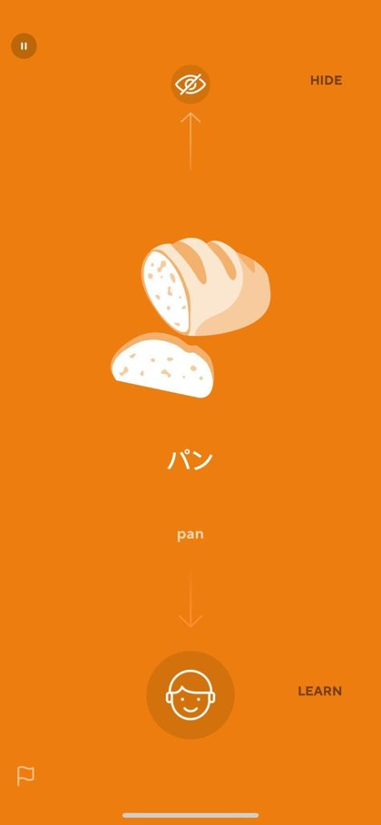
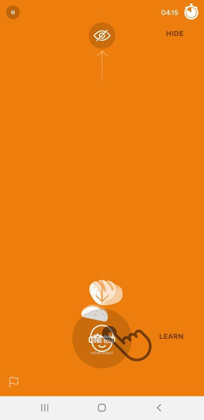
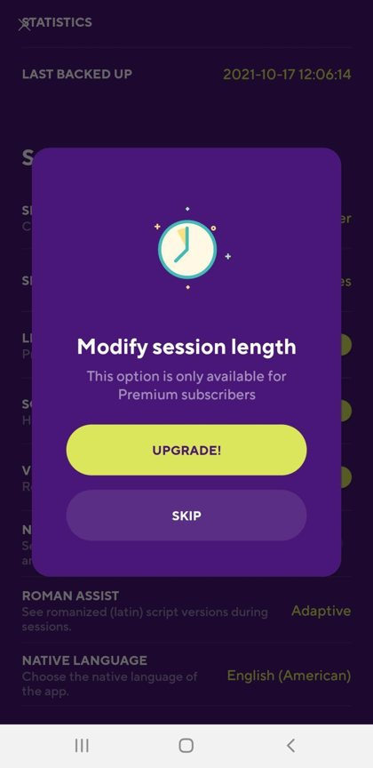
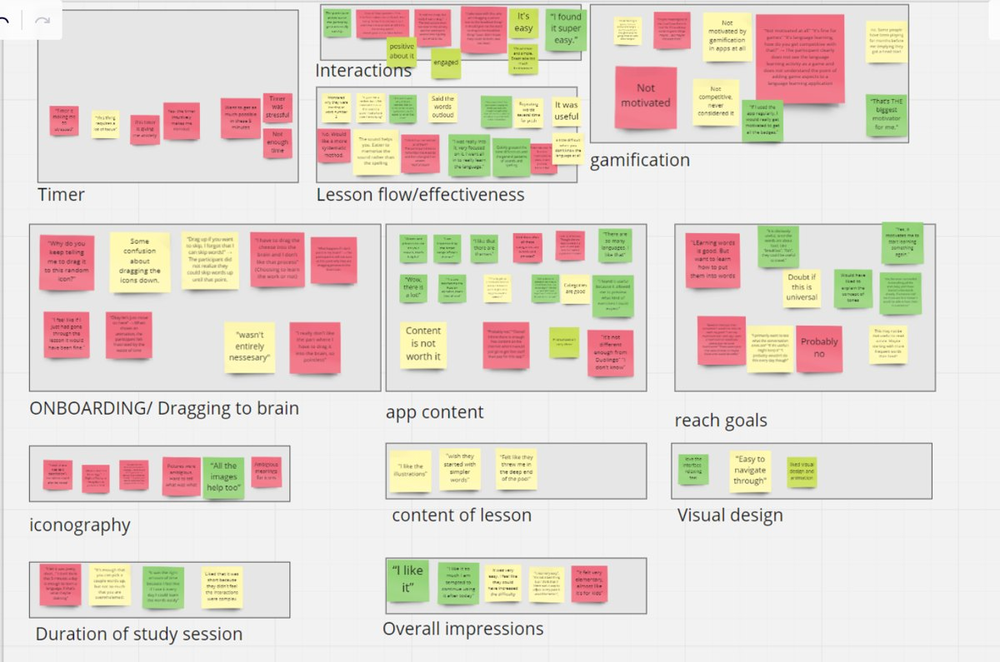

Case study · Learning technology evaluation
Evaluating the Drops language app
A team evaluation of a popular vocabulary app: a critique grounded in learning research, then a usability study with four participants that led to eight recommendations.
- Product
- Drops, a mobile app that teaches vocabulary through pictures, audio and short timed sessions
- Participants
- Four adult language learners, aged 18 to 50+
- Methods
- Expert critique, pre-activity survey in Qualtrics, observed first lesson, moderated interview, theme analysis in Miro
- My role
- Moderated and observed the sessions, alternating roles with a teammate. Co-wrote the report and helped revise the study materials after the pilot.
- Context
- Team project, EDUC 504, Iowa State University
- Year
- Fall 2021
The question
Drops calls itself "the easy, fun & effective way to learn a language." We asked whether it teaches what it claims, and how new learners experience their first session.
What the research says about its design
Supported by research
- Pictures for concrete, everyday words
- Multimodal input: picture, audio and written form together
- Spaced repetition, even a few minutes a day
- Instant feedback on every answer
Limits we expected
- Pictures can't carry abstract words
- Beginner, intermediate and advanced settings show the same content
- A prominent countdown timer could pull attention from learning



Study design
We mapped each question to a method, ran a pilot session, and revised the survey and moderator script before the real sessions.
| What we wanted to know | Method |
|---|---|
| Participants' language background and app experience | Pre-activity survey in Qualtrics |
| Their goals for learning a language | Interview question before the lesson |
| How usable the app is for a first-time learner | Observation of a five-minute lesson and the app's main pages, recorded on video |
| How well onboarding and the lesson worked | Moderated interview after the lesson |

What we found
Participants enjoyed the app, and all four felt it was incomplete for learning a language.
Recommendations
Six of the eight recommendations we made:
| Issue | Recommendation |
|---|---|
| Learners forgot why they dragged words to the brain icon | Keep helper text on screen while learners perform the action, so the explanation and the gesture happen together. |
| Ambiguous icons | Show the word in the learner's own language under each icon, with an option to turn it off. |
| Timer stress | Let learners hide the timer, or show it only in the last 30 seconds. |
| Skill levels look identical | Make beginner, intermediate and advanced change the content. |
| Everyone starts with food words | Ask for the learner's goal first and choose the first topic to match. |
| Learners expected a full course | Describe Drops as a vocabulary app that supplements other study. |
Reflection
This was my first usability study. Some of our expectations held up: the most casual learner liked the app most, and the most serious learners were frustrated that it didn't adapt to their level. Others didn't. We expected the timer to stress most people, and it bothered only one participant.